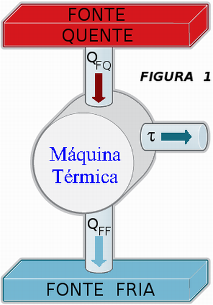

Leis da Termodinâmica
Primeira Lei da Termodinâmica
A Primeira Lei da Termodinâmica se ocupa daquilo que é necessário para que trabalho seja transformado em calor.
Tem como fundamento o princípio da conservação de energia, que é um dos princípios mais importantes da Física.
Essa conservação de energia acontece sob as formas de calor e de trabalho. Ela faz com que um sistema possa conservar e transferir energia, ou seja, a energia pode sofrer aumento, diminuição ou permanecer constante.
A Primeira Lei da Termodinâmica é expressa pela fórmula
Q = τ + ΔU
Onde,
Q: calor
τ: trabalho
ΔU: variação da energia interna
Desta forma, seu fundamento é: o calor (Q) resulta da soma de trabalho (τ) com a variação da energia interna (ΔU).

Segunda lei da Termodinâmica
A Segunda Lei da Termodinâmica trata da transferência de energia térmica. Isso quer dizer que ela indica as trocas de calor que têm tendência para igualar temperaturas diferentes (equilíbrio térmico), o que acontece de forma espontânea.
Seus princípios são:
O calor é transferido de forma espontânea do corpo de maior temperatura para o de menor temperatura.
Todo processo tem perda porque seu rendimento sempre é inferior a 100%.
É expressa pela seguinte fórmula:
Fórmula para calcular rendimento, de acordo com a Segunda Lei da Termodinâmica
Onde,
η: rendimento
QA: calor fornecido por aquecimento
QB: calor não transformado em trabalho
Essa lei se estabeleceu a partir dos estudos de Sadi Carnot (1796-1832). Incentivado pela Revolução Industrial, o físico francês estudava a possibilidade de aumentar a eficiência das máquinas.
Analisando as máquinas térmicas, Carnot descobriu que elas eram mais eficientes quando havia transferência de calor da temperatura mais alta para a temperatura mais baixa. Isso acontece sempre nessa ordem, afinal a transferência de energia térmica é um processo irreversível.